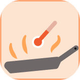
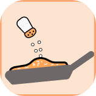
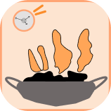

TastyHome
Секрет домашнего вкуса — готовить с душой
Рецепты по шагам

Температура и время
Пропорции и специи
Следим за временемНапример: «картофель, кефир» покажет, что можно приготовить из этих продуктов.
Секрет домашнего вкуса — готовить с душой

Температура и время
Пропорции и специи
Следим за временемНапример: «картофель, кефир» покажет, что можно приготовить из этих продуктов.